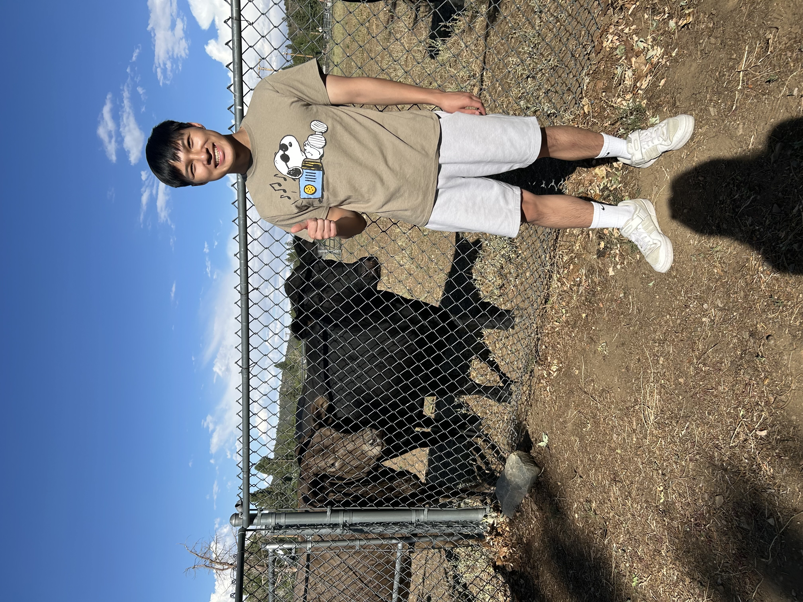

About Me

Hello! My name is Kory Yuen (he/him). I'm from San Gabriel, CA and I'm a second-year Computer Engineering student.
I'm extremely passionate about helping others through tech while learning new things about tech.
This year, I hope to gain some professional
experience and try to get an internship. A fun fact about me is that I'm left-handed. Some hobbies I have are playing video games, going to the gym, and
watching sports (mainly basketball and football).